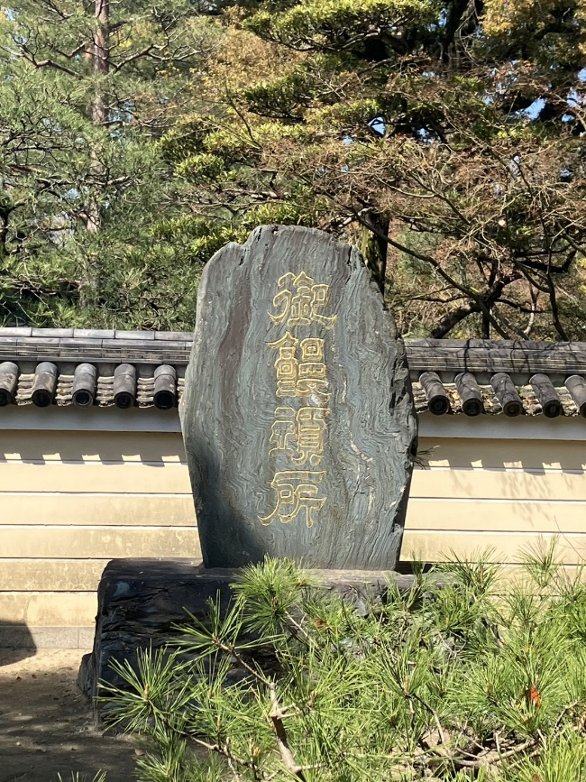
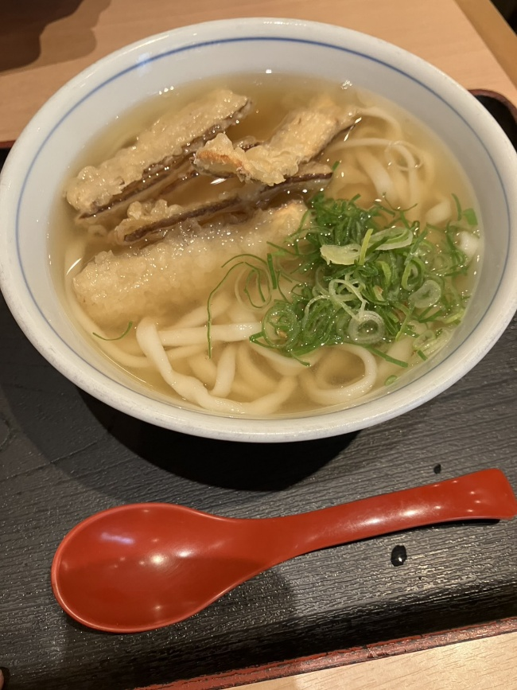

週刊東山通信 第9回博多でごぼう天を食べて思ったこと投稿日：2026年4月9日 ｜ 執筆：原田 研究発表会の用事で博多を訪れた。 発表会の前、うどんとそばの発祥の地とされる「承天寺」に足を運んだ。境内に建つ石碑を見上げながら、ある事実に思いを馳せる。博多は古くから日本とアジアをつなぐ玄関口だった。有名な僧侶が大陸へ修行に渡り、帰国する際にうどんやそばの製法をこの地に持ち帰ったという。だとしたら、博多の街に並ぶ熱気あふれる屋台や、あの濃厚な博多ラーメンも、大陸から地続きでやってきた文化の延長線上にあるのではないか、と。  承天寺の石碑 この直感が歴史的に完全な正解であるかどうかは、今の私にはさして重要ではない。重要なのは、この石碑を前にした瞬間、私の中で博多という都市が「アジアとの玄関口」に書き換えられたことであって、それが正しいかどうか、というのは割とどうでもいい。ともかく、都市とは、見方がどうあるかによってその姿を大きく変える。 この博多に対する見方（国際都市としての博多）は、2日間の滞在でさらに強固なものとなった。 屋台の熱気には地域の人々と店主の生活感が息づいており、以前、卒業旅行で訪れたインドで目にしたような「アジア的」な風景と完全に重なる。鴻臚館跡に足を運べば、シルクロードを渡ってきた異国の陶器が静かに並んでいる。そして博多ポートタワーに登れば、港に辿り着きそうな貿易船、着陸態勢に入り低空を這う旅客機、都市の血管のように延びる高速道路が、ひとつの風景に収まっている。 古来からの国際都市、福岡。私の勘は、確信へと変わっていた。 鴻臚館跡 博多ポートタワーからの眺望 鴻臚館を後にした私は、ごぼう天うどんの店に入った。 親戚が福岡に住んでいることもあり、幼いころに母の「懐かしの味」として食べた記憶がある。 まずは出汁をすする。名古屋で慣れ親しんだ醤的な、味噌や醤油の主張が強い味ではない。純粋な出汁、そのものの輪郭がその中身に言及し包み込むような、ほっとする味わいだ。 そして、ごぼう天。やわめの麺の上に、薄切りのゴボウの天ぷらが無骨に乗っている。ゴボウという食材は単体では決して天ぷら界の主役とは言い難い。単体でかじれば、土や根っこを思わせる、いかにも材質的、と言った感じの味がする。しかし、これが油をまとい、出汁を吸い、小麦の麺と交渉の末に共犯関係を結んだ瞬間、全体として完璧な「出汁の一部」へと昇華されるのだ。ゴボウ単体が持つ極端な土っぽさは、うどんという総体を引き立てるためのピーキーな役割を果たす。 うまい。 だが、舌で感じる旨さと同じくらい、俺の脳を刺激したものがある。それは、先ほどから私の中で構築されていた「街の見方」が、味覚を媒介としながら直接脳みそにガツンと流れ込んできたことだ。 うどんを作るノウハウは、大陸から長い旅を経てこの地へもたらされた。一方で、上に乗るゴボウはいかにも土の匂いがするまさに「土着」といった感じを醸し出している。大陸の洗練された文化のうえに、力強い土着が乗っている。この一杯のうどんは、味という次元を越えて、博多という土地が持つストーリーそのものとして、その場の雰囲気として私を包み込んだ。 結局のところ、物事が歴史的に正しいか、正しくないかということは個人が街の見方を構築する上では二次的な問題に過ぎない。重要なのは、その街の風景と食を前にして、自分がひとつの確固たるストーリーを思い込めるかどうかだ。ものの見方や、都市としての風格は、視座の提示の仕方によって後からでも十分に構築可能なんだ、そう考えたら、がっかり観光地として有名な名古屋市にも希望があるんじゃないか。  ごぼう天うどん ところで、我々「木魚人」が拠点とする「東山」という名称も、まさにそうした可能性を秘めている。 名古屋大学の東山キャンパスが直接的な由来ではあるが、東山という言葉は極めて抽象的でありながら、「東にある山」という息づく歴史の匂いを持っている。東山動植物園というランドマークの裏路地に、語られていないストーリーが潜んでいそうだ。 我々の1st EP『東山魚人伝』は、こうした東山というイメージの余白を利用して、名古屋という都市の新たな見方を提示する文脈構築の試みである、と勝手に思っている。都市の風景は、視座さえ確かならば、いかようにも風格を帯びる。木魚人は、音楽と文脈を通じて、名古屋という街の見方を新しく提示する存在でありたい。大陸の風と土着の根っこが一杯の丼のなかで完璧に調和した、あのごぼう天うどんのように。 原田 |
💬 コメント
コメントを投稿する
※お名前は自由に設定できます。コメントはちいかわ風に変換されます。